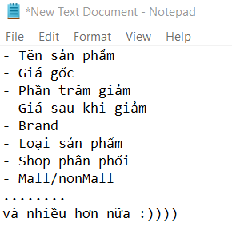
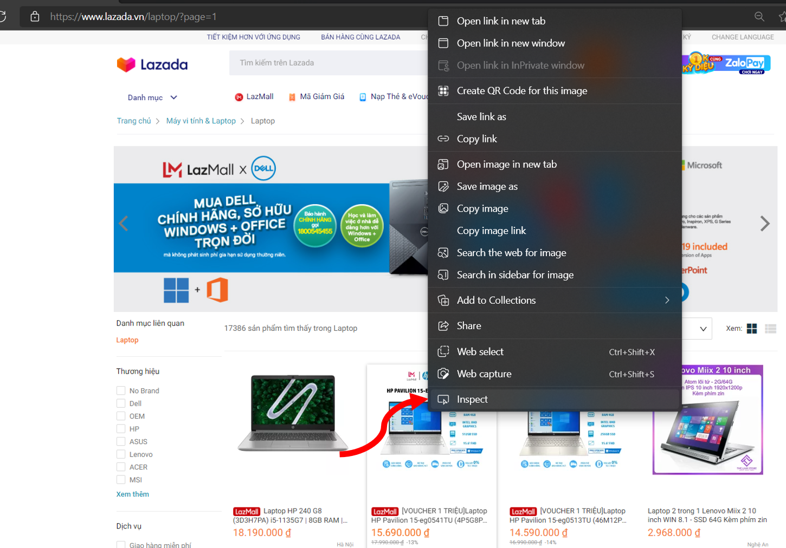
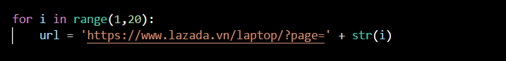
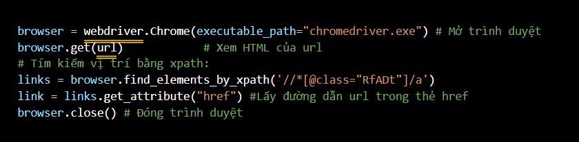
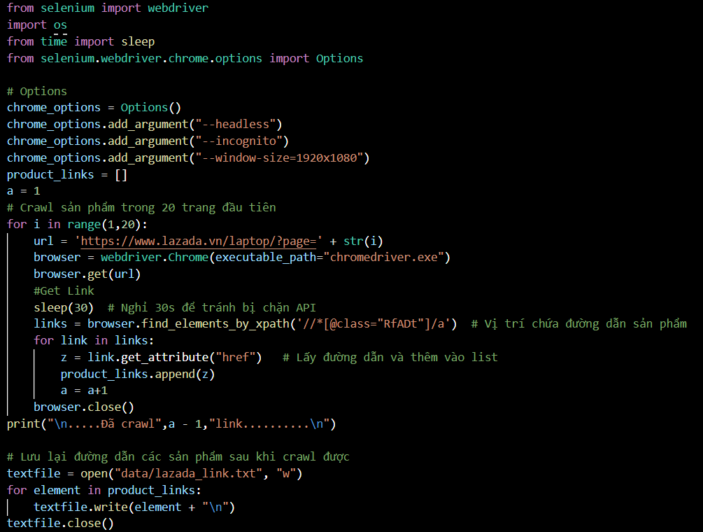
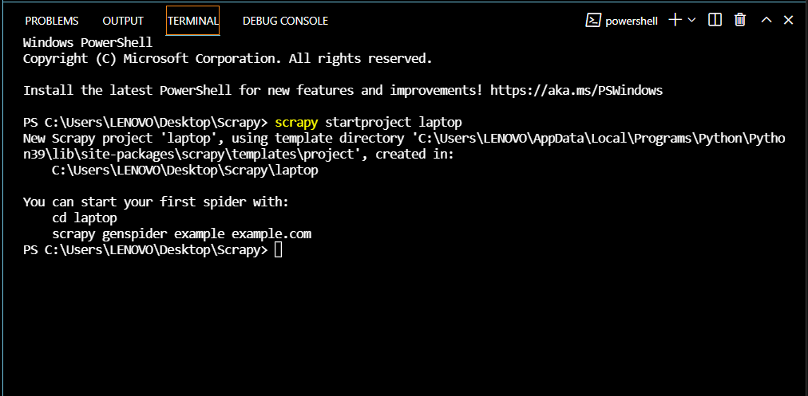
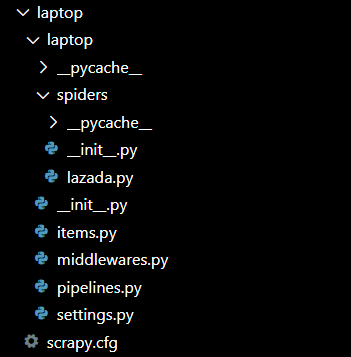
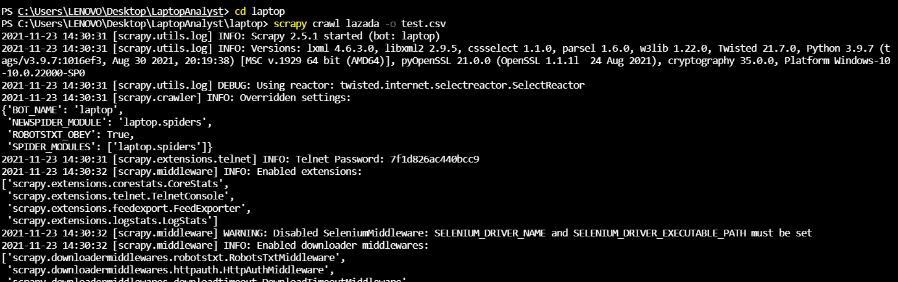

Tập tành viết Crawl và phân tích dữ liệu Laptop trên Lazada bằng Python (Phần 1)
Sunday, Nov 21st, 2021
Trong bài viết này mình sẽ giới thiệu với các bạn cách sử dụng Selenium và Scrapy trong Python để scrape dữ liệu laptop từ trang Lazada. Sau đó dùng các thư viện phân tích dữ liệu như Numpy, Pandas trong Python để tiến hành phân tích dữ liệu.
Lưu ý
1. Xác định thông tin cần lấy
Trước khi bắt tay vào làm chúng ta cần xem qua trang web Lazada:
Sau khi check xong các bạn nên list ra những thông tin cần lấy về vào 1 file nháp:
2. Cách Inspect để lấy thông tin
Vd: Để có thể tìm được đường dẫn sản phẩm trong danh mục hiển thị, chúng ta click phải chuột vào đường dẫn đến sản phẩm (tên sản phẩm) và chọn inspect:
Cửa sổ DevTools sẽ bật lên và hiển thị vị trí của đường dẫn bạn đang trỏ nằm ở đâu trong file html:

Sau khi xem qua 1 (hoặc nhiều sản phẩm cho chắc ăn) , đường dẫn đến sản phẩm sẽ nằm trong tag a, thuộc class=”RfADt”.
Như vậy xpath tương ứng sẽ là '//*[@class="RfADt"]/a'. Sau đó bạn thực hiện tương tự đối với các thông tin khác và nhớ note lại nhé.
3. Crawl dữ liệu trên Lazada bằng Scrapy và Selenium:
Lưu ý:
a. Sử dụng Selenium để lấy đường dẫn sản phẩm:
Ta thấy trong danh mục laptop của Lazada, đường dẫn sẽ có dạng:
Áp dụng vòng lặp For để có thể duyệt qua các trang khác.
Giải thích cách hoạt động của Selenium:
Kết hợp lại ta sẽ có:
Sau khi đã lấy được danh sách sản phẩm, chúng ta lưu nó vào 1 file text để chút nữa xài nha.
Vì sao phải dừng 30s? Các bạn có thể thay đổi thời gian nhanh hơn (hoặc chậm hơn) chứ mình để vậy để tránh “detected unusual traffic” từ Lazada ( Hiện nay các trang TMĐT làm vậy để chống DDOS Attack, nghẽn mạng khi có quá nhiều người truy cập, hay mấy con bot cào dữ liệu như mình làm chẳng hạn,...)
b. Sử dụng Scrapy để lấy dữ liệu chi tiết sản phẩm:
Tạo project Scrapy:
Mở terminal ở thư mục cần tạo
scrapy startproject <project_name>
Sau đó chuyển đến thư mục vừa tạo để tiếp tục tạo con bot bằng lệnh:
scrapy genspider –t basic <bot_name> <domain>
Đây là cấu trúc thư mục chúng ta vừa tạo thông qua Scrapy
Các bạn cần đọc qua guide của Scrapy trước để nắm sương sương. Còn gọn lẹ thì chủ yếu mình sẽ chỉnh sửa 2 file là item.py và spiders/lazada.py:
Lần lượt đọc link đã lưu trong file text, xác định xpath (bằng inspect) và lưu lại trong class “LaptopItem”
Và để chạy con bot này thì bạn quay lại terminal gõ lệnh
scrapy crawl <bot_name> -o <tên_file.csv>
Đến đây chỉ việc treo máy, mở tab khác hay chơi game và đợi sản phẩm thoy.
Mình chạy thì Crawl được 650 link (650 sản phẩm) với tốc độ chầm chậm (3-4 sản phẩm/phút). Các bạn có thể tham khảo File và code chi tiết tại đây.
4. Tổng kết
Tuy hướng làm của mình khá đơn giản có thể lấy được dữ liệu nhưng vẫn còn nhiều thiếu sót. 1 số nhược điểm còn gặp phải:
Hướng khắc phục trong tương lai:
Trên đây là phần 1 chủ yếu tập trung vào việc thu thập dữ liệu, phần 2 sẽ sớm hoàn thiện để gửi đến cacban. Hy vọng bài viết này sẽ giúp ích ít nhiều cho các bạn. Chúc cacban có 1 ngày thật đẹp :>
Other Project
Simple Crawler with Python using BeautifulSoup
Freshman's projectCreate a simple Crawling system to crawl articles from some online Newspapers such as: Vienamnet, Dantri,... This is my first project and i got A mark

Covid-19 Data Visualization with R
Freshman's projectI Used Plotly library in R to visualize Covid-19 data from Johns Hopkins University